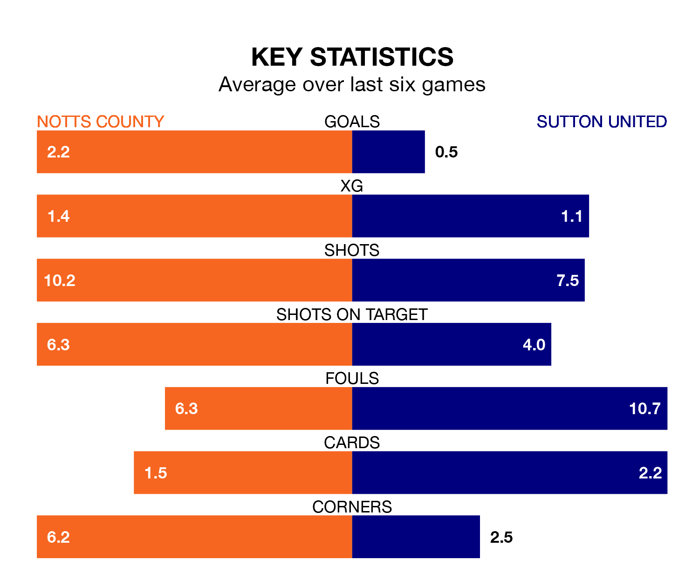

Notts County are heavy favourites to keep all three points at home in Saturday's kick-off against Sutton United.
County, who sit fifth in EFL League Two with 26 games played, are priced at 1.5 to seal victory at Meadow Lane.
Sitting 18 places and 24 points behind them in the table, Sutton are 5.6 to win with *Betting Company*, while the draw is at 4.6.
With 55 goals in 26 games so far this season, County are the league's highest scorers with 2.1 goals per game. But they are conceding more than average too, letting in 47 goals at a rate of 1.8 per game.
Sutton, meanwhile, are below average scorers, with 1.1 goals per game, compared to a league average of 1.5. They have conceded 2.1 goals per game.
In Macaulay Langstaff, the home team have the league's sharpest shooter so far this season. He has notched 19 goals in 26 appearances.
His goal rate of one every 119 minutes is quicker than that of Harry Smith, United's top scorer with a goal every 222 minutes, and a total of seven goals in 20 games.
County are in disappointing form in EFL League Two, with two wins and four losses from their last six games.
With a win and two draws over that period, the Us's form is slightly worse – they have taken five points from 18, compared to County's six.
County's last match was on Monday, a 4-2 loss against Tranmere Rovers, with Aaron Evans Nemane and Langstaff getting the goals for County.
Sutton drew 1-1 with Newport County last time out, also on Monday, with Olusanya Temi Fadahunsi on the scoresheet.
Updated: 10:36, 03/01/24